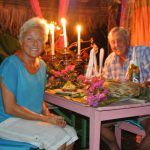

Eine unvergesslich schöne und beeindruckende Hochzeits-Reise in Madagaskar mit PRIORI erlebt
„Salama liebes Priori Team!
Wir möchten uns noch einmal bei euch für alles und dafür bedanken, dass wir eine so unvergesslich schöne und beeindruckende Hochzeits-Reise in Madagaskar erleben durften! Ihr seid einfach die Besten!!! Tsarabe!!!!!
Madagaskar ist sehr beeindruckend und wunderschön, genauso wie die Menschen und die Tierwelt! Wir haben viel Schönes gesehen, aber auch Trauriges und gefährliche Situationen erlebt.
Ausserdem hatten wir nicht gewusst, wie kalt es auf Madagaskar ist. Zur Zeit unseres Aufenthaltes und dass es dauerhaft in Strömen regnet. Aber ab der 2. Woche kam dann die Sonne endlich zum Vorschein und wir konnten uns von unserer Erkältung erholen. 🙂
Unvergesslich waren unsere Begegnungen mit Buckelwalen und Lemuren!!!
Wir haben viele interessante Leute kennengelernt und durften sogar einige Freundschaften mit wunderbaren Menschen schliessen. Andere Urlauber waren gestresst oder hatten es zu eilig, um länger auf ihr Essen zu warten. Unser Motto war jedoch immer: Mora mora!!! – Sehr zur Freude der Einwohner und Mitarbeiter unseres Hotels und allen anderen Menschen, die wir kennenlernen durften! 🙂
Dadurch hatten wir die Möglichkeit, nicht nur Französisch und Englisch zu sprechen, sondern auch etwas Malagasy zu lernen.
Es gab auch eine sehr lustige Situation, die ich (Ariane) nie vergessen und immer mit Madagaskar und den Menschen dort in Verbindung bringen werde:
Wir hatten in unserem Hotel auf Sainte Marie einen Security man, der vor unserer Hütte jede Nacht am Strand Wache gehalten hat. Ich habe ihn im Dunkeln nicht gesehen und als ich an den Strand ging. Er war nur wenige Schritte von unserer Hütte entfernt. Plötzlich hörte ich laute Knallgeräusche auf dem Meer. Ich dachte es wäre ein Feuerwerk eventuell auf Madagaskar, weil man von unserem Strand aus die Silhouette von Madagaskar sehen konnte. Ich schrie ganz begeistert nach Peter, der mich jedoch nicht hören konnte, weil er in unserer Hütte war: Firework, firework!! Plötzlich erklang eine Stimme aus der Dunkelheit: Non, ce sont les baleines!!… Es war die Stimme des Security man, die mich aufklärte.
Einerseits war mir mein Irrtum so peinlich, dass ich dachte, es handelte sich um ein Feuerwerk und es auch noch so laut herausgeschrien habe :-), aber andererseits, wäre ich nicht so „temperamentvoll“ gewesen, hätte ich nie gewusst, dass das laute und wunderschöne Geräusch von den Buckelwalen stammte, die sich direkt vor uns in der Dunkelheit aufs Meer klatschen liessen, um miteinander zu kommunizieren.
Mein „emotionaler Ausbruch“ hat beim Security man das Eis gebrochen, denn er fand das so sympathisch und lustig und wir kamen sofort ins Gespräch. So sassen wir die ganze Nacht bis zum Tagesanbruch vor unserer Hütte am Strand und sprachen über Gott und die Welt auf Französisch, Englisch und er brachte mir verschiedene Worte auf Malagasy bei. Und er versuchte von mir Deutsch zu lernen. Es war sehr sehr lustig! Wir hatten jedoch auch ernste Themen und so wurde diese Nacht für mich so authentisch, einmalig und unvergesslich schön!!! Ich habe die Buckelwale in der Nacht im Mondschein unter dem Himmel voller leuchtender Sterne aus dem Meer springen gesehen und bin mit dem einmalig schönen Geräusch im Ohr eingeschlafen – wunderwunderschön und unvergesslich!!!
Wir schicken euch gleich noch ein paar Fotos von unserer wunderbaren Hochzeits-Reise in Madagaskar.
Viele liebe Grüsse. Misaotra ny zava-drehetra! Misaotra betsaka! Veloma!„
Eure Ariane und euer Peter V.
-
